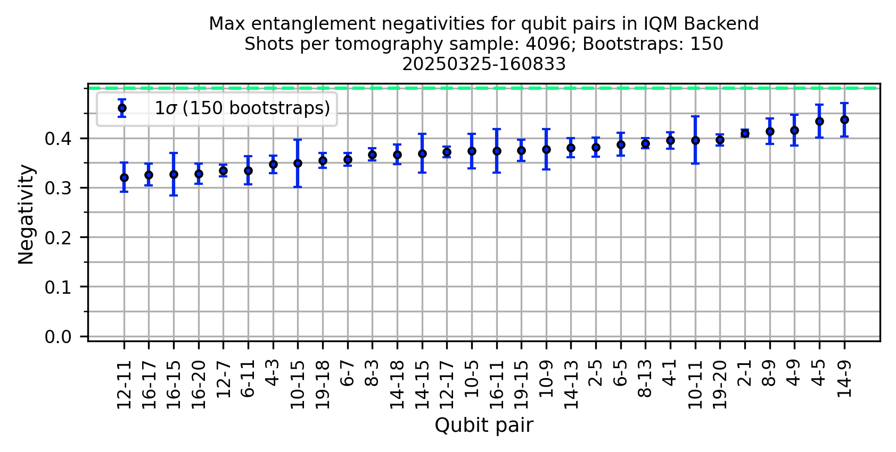
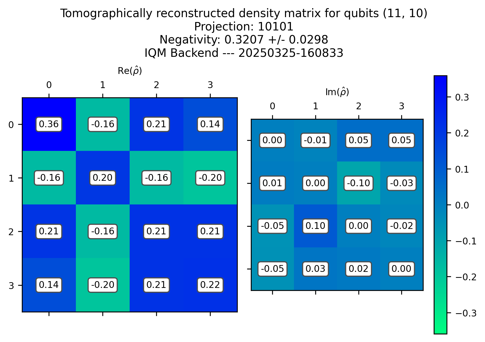
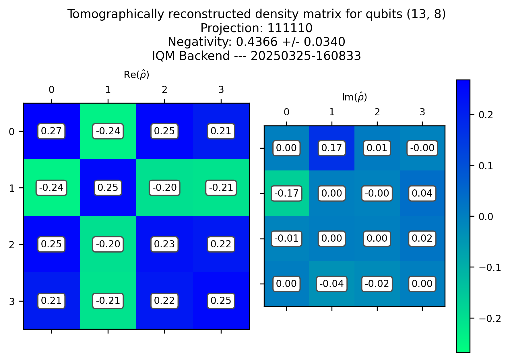
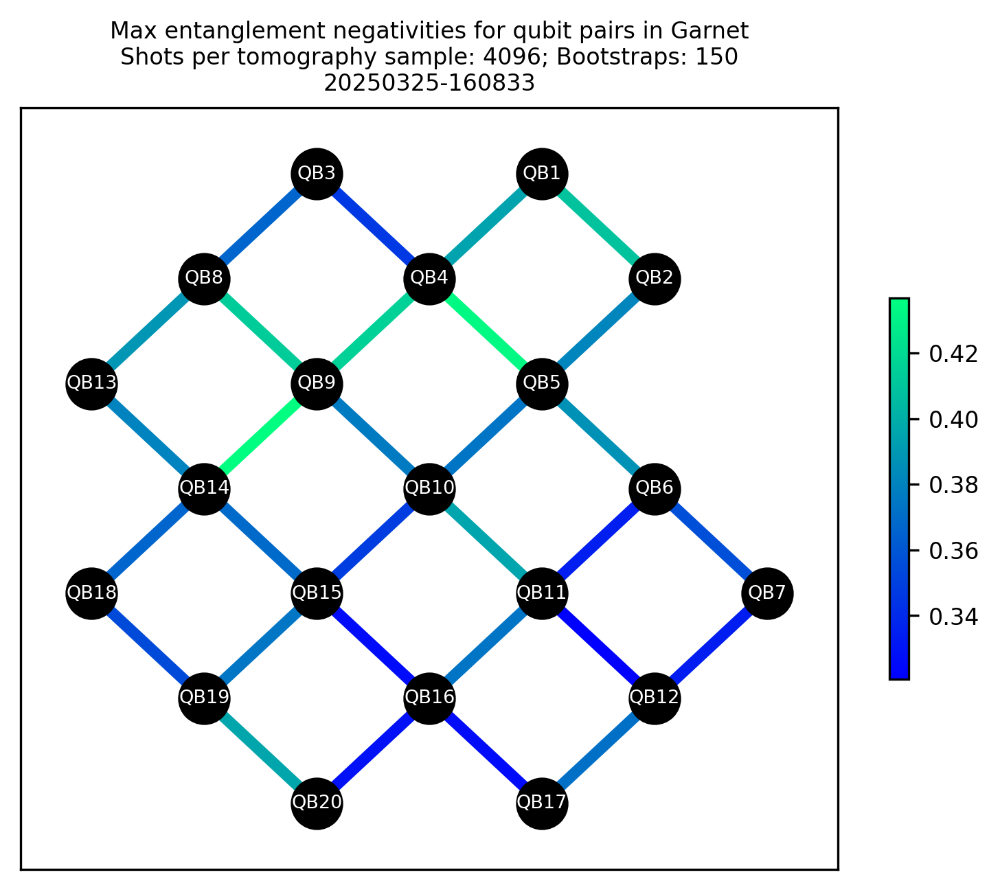

Graph State Bipartite Entanglement#
%load_ext autoreload
%autoreload 2
Choose (or define) a backend#
#backend = "fakeadonis"
#backend = "fakeapollo"
#backend = "garnet"
Set IQM Token if using Resonance.
import os
token = "xxxxxxxxxxxxxxxx"
os.environ["IQM_TOKEN"] = token
from iqm.benchmarks.utils import get_iqm_backend
backend=get_iqm_backend("garnet")
# from iqm.qiskit_iqm.iqm_provider import IQMProvider
# iqm_url="https://cocos.resonance.meetiqm.com/garnet"
# provider = IQMProvider(iqm_url)
# backend = provider.get_backend()
import matplotlib as mpl
mpl.rcParams['figure.dpi'] = 300
Graph State Configuration#
from iqm.benchmarks.entanglement.graph_states import *
EXAMPLE_GRAPHSTATE = GraphStateConfiguration(
qubits=list(range(backend.num_qubits)),
shots=2**12,
tomography="state_tomography",
num_bootstraps = 150,
# n_random_unitaries=25,
# n_median_of_means=4,
#max_gates_per_batch=40_000,
)
Run the experiment#
benchmark_graphstate = GraphStateBenchmark(backend, EXAMPLE_GRAPHSTATE)
run_graphstate = benchmark_graphstate.run()
2025-03-25 16:08:33,747 - iqm.benchmarks.logging_config - INFO - Identifying qubit pairs and neighbor groups for the Graph State benchmark
2025-03-25 16:08:33,748 - iqm.benchmarks.logging_config - INFO - Performing state tomography of all qubit pairs
2025-03-25 16:08:33,749 - iqm.benchmarks.logging_config - INFO - Now on group 1/10
2025-03-25 16:08:33,750 - iqm.benchmarks.logging_config - INFO - Now on qubit pair (11, 10) and neighbors {5, 6, 9, 15, 16}
2025-03-25 16:08:33,753 - iqm.benchmarks.logging_config - INFO - Now on qubit pair (18, 17) and neighbors {13, 14, 19}
2025-03-25 16:08:33,755 - iqm.benchmarks.logging_config - INFO - Now on qubit pair (7, 12) and neighbors {2, 8, 13}
2025-03-25 16:08:33,758 - iqm.benchmarks.logging_config - INFO - Now on qubit pair (3, 4) and neighbors {0, 1, 2, 5, 8, 9}
2025-03-25 16:08:33,761 - iqm.benchmarks.logging_config - INFO - Submitting batch with 36 circuits corresponding to qubits [11, 10, 18, 17, 7, 12, 3, 4]
C:\Users\PedroFigueroaRomero\anaconda3\envs\iqm-bench\Lib\site-packages\iqm\qiskit_iqm\iqm_provider.py:177: UserWarning: Unknown backend option(s): {'calibration_set_id': None}
warnings.warn(f'Unknown backend option(s): {unknown_options}')
2025-03-25 16:08:34,395 - iqm.benchmarks.logging_config - INFO - Now on group 2/10
2025-03-25 16:08:34,396 - iqm.benchmarks.logging_config - INFO - Now on qubit pair (13, 8) and neighbors {3, 7, 9, 12, 14, 17}
2025-03-25 16:08:34,398 - iqm.benchmarks.logging_config - INFO - Now on qubit pair (11, 16) and neighbors {6, 10, 15}
2025-03-25 16:08:34,400 - iqm.benchmarks.logging_config - INFO - Now on qubit pair (5, 4) and neighbors {1, 3, 6, 9, 10}
2025-03-25 16:08:34,402 - iqm.benchmarks.logging_config - INFO - Now on qubit pair (18, 19) and neighbors {14, 15, 17}
2025-03-25 16:08:34,405 - iqm.benchmarks.logging_config - INFO - Submitting batch with 36 circuits corresponding to qubits [13, 8, 11, 16, 5, 4, 18, 19]
2025-03-25 16:08:35,195 - iqm.benchmarks.logging_config - INFO - Now on group 3/10
2025-03-25 16:08:35,195 - iqm.benchmarks.logging_config - INFO - Now on qubit pair (1, 0) and neighbors {3, 4}
2025-03-25 16:08:35,197 - iqm.benchmarks.logging_config - INFO - Now on qubit pair (13, 14) and neighbors {8, 9, 12, 15, 17, 18}
2025-03-25 16:08:35,200 - iqm.benchmarks.logging_config - INFO - Now on qubit pair (5, 10) and neighbors {4, 6, 9, 11, 15}
2025-03-25 16:08:35,202 - iqm.benchmarks.logging_config - INFO - Now on qubit pair (7, 2) and neighbors {3, 8, 12}
2025-03-25 16:08:35,205 - iqm.benchmarks.logging_config - INFO - Submitting batch with 36 circuits corresponding to qubits [1, 0, 13, 14, 5, 10, 7, 2]
2025-03-25 16:08:35,816 - iqm.benchmarks.logging_config - INFO - Now on group 4/10
2025-03-25 16:08:35,816 - iqm.benchmarks.logging_config - INFO - Now on qubit pair (15, 16) and neighbors {10, 11, 14, 19}
2025-03-25 16:08:35,819 - iqm.benchmarks.logging_config - INFO - Now on qubit pair (5, 6) and neighbors {4, 10, 11}
2025-03-25 16:08:35,821 - iqm.benchmarks.logging_config - INFO - Now on qubit pair (9, 8) and neighbors {3, 4, 7, 10, 13, 14}
2025-03-25 16:08:35,824 - iqm.benchmarks.logging_config - INFO - Submitting batch with 27 circuits corresponding to qubits [15, 16, 5, 6, 9, 8]
2025-03-25 16:08:36,584 - iqm.benchmarks.logging_config - INFO - Now on group 5/10
2025-03-25 16:08:36,585 - iqm.benchmarks.logging_config - INFO - Now on qubit pair (11, 6) and neighbors {5, 10, 16}
2025-03-25 16:08:36,587 - iqm.benchmarks.logging_config - INFO - Now on qubit pair (9, 14) and neighbors {4, 8, 10, 13, 15, 18}
2025-03-25 16:08:36,590 - iqm.benchmarks.logging_config - INFO - Now on qubit pair (3, 0) and neighbors {1, 2, 4, 8}
2025-03-25 16:08:36,592 - iqm.benchmarks.logging_config - INFO - Submitting batch with 27 circuits corresponding to qubits [11, 6, 9, 14, 3, 0]
2025-03-25 16:08:37,324 - iqm.benchmarks.logging_config - INFO - Now on group 6/10
2025-03-25 16:08:37,326 - iqm.benchmarks.logging_config - INFO - Now on qubit pair (15, 19) and neighbors {10, 14, 16, 18}
2025-03-25 16:08:37,330 - iqm.benchmarks.logging_config - INFO - Now on qubit pair (13, 17) and neighbors {8, 12, 14, 18}
2025-03-25 16:08:37,332 - iqm.benchmarks.logging_config - INFO - Now on qubit pair (9, 4) and neighbors {1, 3, 5, 8, 10, 14}
2025-03-25 16:08:37,334 - iqm.benchmarks.logging_config - INFO - Submitting batch with 27 circuits corresponding to qubits [15, 19, 13, 17, 9, 4]
2025-03-25 16:08:38,011 - iqm.benchmarks.logging_config - INFO - Now on group 7/10
2025-03-25 16:08:38,012 - iqm.benchmarks.logging_config - INFO - Now on qubit pair (3, 2) and neighbors {0, 4, 7, 8}
2025-03-25 16:08:38,017 - iqm.benchmarks.logging_config - INFO - Now on qubit pair (15, 14) and neighbors {9, 10, 13, 16, 18, 19}
2025-03-25 16:08:38,020 - iqm.benchmarks.logging_config - INFO - Submitting batch with 18 circuits corresponding to qubits [3, 2, 15, 14]
2025-03-25 16:08:38,558 - iqm.benchmarks.logging_config - INFO - Now on group 8/10
2025-03-25 16:08:38,559 - iqm.benchmarks.logging_config - INFO - Now on qubit pair (9, 10) and neighbors {4, 5, 8, 11, 14, 15}
2025-03-25 16:08:38,562 - iqm.benchmarks.logging_config - INFO - Now on qubit pair (13, 12) and neighbors {7, 8, 14, 17}
2025-03-25 16:08:38,566 - iqm.benchmarks.logging_config - INFO - Submitting batch with 18 circuits corresponding to qubits [9, 10, 13, 12]
2025-03-25 16:08:39,150 - iqm.benchmarks.logging_config - INFO - Now on group 9/10
2025-03-25 16:08:39,151 - iqm.benchmarks.logging_config - INFO - Now on qubit pair (15, 10) and neighbors {5, 9, 11, 14, 16, 19}
2025-03-25 16:08:39,155 - iqm.benchmarks.logging_config - INFO - Now on qubit pair (3, 8) and neighbors {0, 2, 4, 7, 9, 13}
2025-03-25 16:08:39,159 - iqm.benchmarks.logging_config - INFO - Submitting batch with 18 circuits corresponding to qubits [15, 10, 3, 8]
2025-03-25 16:08:39,704 - iqm.benchmarks.logging_config - INFO - Now on group 10/10
2025-03-25 16:08:39,705 - iqm.benchmarks.logging_config - INFO - Now on qubit pair (7, 8) and neighbors {2, 3, 9, 12, 13}
2025-03-25 16:08:39,708 - iqm.benchmarks.logging_config - INFO - Now on qubit pair (1, 4) and neighbors {0, 3, 5, 9}
2025-03-25 16:08:39,711 - iqm.benchmarks.logging_config - INFO - Now on qubit pair (18, 14) and neighbors {9, 13, 15, 17, 19}
2025-03-25 16:08:39,714 - iqm.benchmarks.logging_config - INFO - Submitting batch with 27 circuits corresponding to qubits [7, 8, 1, 4, 18, 14]
2025-03-25 16:08:40,303 - iqm.benchmarks.logging_config - INFO - Retrieving all counts for [11, 10, 18, 17, 7, 12, 3, 4]
2025-03-25 16:09:42,125 - iqm.benchmarks.logging_config - INFO - Adding counts of qubit pairs [11, 10, 18, 17, 7, 12, 3, 4] to the dataset
2025-03-25 16:09:42,461 - iqm.benchmarks.logging_config - INFO - Retrieving all counts for [13, 8, 11, 16, 5, 4, 18, 19]
2025-03-25 16:10:30,208 - iqm.benchmarks.logging_config - INFO - Adding counts of qubit pairs [13, 8, 11, 16, 5, 4, 18, 19] to the dataset
2025-03-25 16:10:30,572 - iqm.benchmarks.logging_config - INFO - Retrieving all counts for [1, 0, 13, 14, 5, 10, 7, 2]
2025-03-25 16:11:17,257 - iqm.benchmarks.logging_config - INFO - Adding counts of qubit pairs [1, 0, 13, 14, 5, 10, 7, 2] to the dataset
2025-03-25 16:11:17,626 - iqm.benchmarks.logging_config - INFO - Retrieving all counts for [15, 16, 5, 6, 9, 8]
2025-03-25 16:11:46,424 - iqm.benchmarks.logging_config - INFO - Adding counts of qubit pairs [15, 16, 5, 6, 9, 8] to the dataset
2025-03-25 16:11:46,756 - iqm.benchmarks.logging_config - INFO - Retrieving all counts for [11, 6, 9, 14, 3, 0]
2025-03-25 16:12:28,104 - iqm.benchmarks.logging_config - INFO - Adding counts of qubit pairs [11, 6, 9, 14, 3, 0] to the dataset
2025-03-25 16:12:28,439 - iqm.benchmarks.logging_config - INFO - Retrieving all counts for [15, 19, 13, 17, 9, 4]
2025-03-25 16:13:00,852 - iqm.benchmarks.logging_config - INFO - Adding counts of qubit pairs [15, 19, 13, 17, 9, 4] to the dataset
2025-03-25 16:13:01,199 - iqm.benchmarks.logging_config - INFO - Retrieving all counts for [3, 2, 15, 14]
2025-03-25 16:13:22,508 - iqm.benchmarks.logging_config - INFO - Adding counts of qubit pairs [3, 2, 15, 14] to the dataset
2025-03-25 16:13:22,798 - iqm.benchmarks.logging_config - INFO - Retrieving all counts for [9, 10, 13, 12]
2025-03-25 16:13:45,350 - iqm.benchmarks.logging_config - INFO - Adding counts of qubit pairs [9, 10, 13, 12] to the dataset
2025-03-25 16:13:45,659 - iqm.benchmarks.logging_config - INFO - Retrieving all counts for [15, 10, 3, 8]
2025-03-25 16:14:11,964 - iqm.benchmarks.logging_config - INFO - Adding counts of qubit pairs [15, 10, 3, 8] to the dataset
2025-03-25 16:14:12,300 - iqm.benchmarks.logging_config - INFO - Retrieving all counts for [7, 8, 1, 4, 18, 14]
2025-03-25 16:14:49,412 - iqm.benchmarks.logging_config - INFO - Adding counts of qubit pairs [7, 8, 1, 4, 18, 14] to the dataset
2025-03-25 16:14:49,823 - iqm.benchmarks.logging_config - INFO - Graph State benchmark experiment execution concluded !
Perform Analysis#
result_graphstate = benchmark_graphstate.analyze()
2025-03-25 16:14:50,042 - iqm.benchmarks.logging_config - INFO - Fetching dataset
2025-03-25 16:14:50,197 - iqm.benchmarks.logging_config - INFO - Dataset imported OK
2025-03-25 16:14:50,197 - iqm.benchmarks.logging_config - INFO - Retrieving tomography-reconstructed states with 150 for qubit-pair group 1/10
2025-03-25 16:14:50,473 - matplotlib.font_manager - WARNING - findfont: Font family ['STIXGeneral'] not found. Falling back to DejaVu Sans.
2025-03-25 16:14:50,477 - matplotlib.font_manager - WARNING - findfont: Font family ['STIXGeneral'] not found. Falling back to DejaVu Sans.
2025-03-25 16:14:50,482 - matplotlib.font_manager - WARNING - findfont: Font family ['STIXGeneral'] not found. Falling back to DejaVu Sans.
2025-03-25 16:14:50,487 - matplotlib.font_manager - WARNING - findfont: Font family ['STIXGeneral'] not found. Falling back to DejaVu Sans.
2025-03-25 16:14:50,492 - matplotlib.font_manager - WARNING - findfont: Font family ['STIXNonUnicode'] not found. Falling back to DejaVu Sans.
2025-03-25 16:14:50,494 - matplotlib.font_manager - WARNING - findfont: Font family ['STIXNonUnicode'] not found. Falling back to DejaVu Sans.
2025-03-25 16:14:50,496 - matplotlib.font_manager - WARNING - findfont: Font family ['STIXNonUnicode'] not found. Falling back to DejaVu Sans.
2025-03-25 16:14:50,499 - matplotlib.font_manager - WARNING - findfont: Font family ['STIXSizeOneSym'] not found. Falling back to DejaVu Sans.
2025-03-25 16:14:50,501 - matplotlib.font_manager - WARNING - findfont: Font family ['STIXSizeTwoSym'] not found. Falling back to DejaVu Sans.
2025-03-25 16:14:50,505 - matplotlib.font_manager - WARNING - findfont: Font family ['STIXSizeThreeSym'] not found. Falling back to DejaVu Sans.
2025-03-25 16:14:50,507 - matplotlib.font_manager - WARNING - findfont: Font family ['STIXSizeFourSym'] not found. Falling back to DejaVu Sans.
2025-03-25 16:14:50,509 - matplotlib.font_manager - WARNING - findfont: Font family ['STIXSizeFiveSym'] not found. Falling back to DejaVu Sans.
2025-03-25 16:14:50,512 - matplotlib.font_manager - WARNING - findfont: Font family ['cmsy10'] not found. Falling back to DejaVu Sans.
2025-03-25 16:14:50,514 - matplotlib.font_manager - WARNING - findfont: Font family ['cmr10'] not found. Falling back to DejaVu Sans.
2025-03-25 16:14:50,516 - matplotlib.font_manager - WARNING - findfont: Font family ['cmtt10'] not found. Falling back to DejaVu Sans.
2025-03-25 16:14:50,518 - matplotlib.font_manager - WARNING - findfont: Font family ['cmmi10'] not found. Falling back to DejaVu Sans.
2025-03-25 16:14:50,521 - matplotlib.font_manager - WARNING - findfont: Font family ['cmb10'] not found. Falling back to DejaVu Sans.
2025-03-25 16:14:50,524 - matplotlib.font_manager - WARNING - findfont: Font family ['cmss10'] not found. Falling back to DejaVu Sans.
2025-03-25 16:14:50,527 - matplotlib.font_manager - WARNING - findfont: Font family ['cmex10'] not found. Falling back to DejaVu Sans.
2025-03-25 16:14:50,537 - matplotlib.font_manager - WARNING - findfont: Font family ['DejaVu Sans Mono'] not found. Falling back to DejaVu Sans.
2025-03-25 16:14:51,525 - iqm.benchmarks.logging_config - INFO - Retrieving tomography-reconstructed states with 150 for qubit-pair group 2/10
2025-03-25 16:14:52,721 - iqm.benchmarks.logging_config - INFO - Retrieving tomography-reconstructed states with 150 for qubit-pair group 3/10
2025-03-25 16:14:53,930 - iqm.benchmarks.logging_config - INFO - Retrieving tomography-reconstructed states with 150 for qubit-pair group 4/10
2025-03-25 16:14:54,845 - iqm.benchmarks.logging_config - INFO - Retrieving tomography-reconstructed states with 150 for qubit-pair group 5/10
2025-03-25 16:14:55,798 - iqm.benchmarks.logging_config - INFO - Retrieving tomography-reconstructed states with 150 for qubit-pair group 6/10
2025-03-25 16:14:56,719 - iqm.benchmarks.logging_config - INFO - Retrieving tomography-reconstructed states with 150 for qubit-pair group 7/10
2025-03-25 16:14:57,351 - iqm.benchmarks.logging_config - INFO - Retrieving tomography-reconstructed states with 150 for qubit-pair group 8/10
2025-03-25 16:14:57,987 - iqm.benchmarks.logging_config - INFO - Retrieving tomography-reconstructed states with 150 for qubit-pair group 9/10
2025-03-25 16:14:58,683 - iqm.benchmarks.logging_config - INFO - Retrieving tomography-reconstructed states with 150 for qubit-pair group 10/10
2025-03-25 16:14:59,625 - iqm.benchmarks.logging_config - INFO - Analysis of Graph State Benchmark experiment concluded!
Display the maximum negativity for all qubit pairs#
The negativity is shown as a percentage of the ideal maximum value of 0.5 (which would be achieved on a noiseless backend).
for idx, o in enumerate(result_graphstate.observations):
if idx == 0:
print(f"Observations: {o.name}\n****************************\n")
print(f"{o.identifier.qubit_indices}: {100.0*(o.value/0.5):.2f} +/- {100.0*(o.uncertainty/0.5):.2f} %")
Observations: max_negativity
****************************
(11, 10): 64.14 +/- 5.95 %
(18, 17): 70.84 +/- 3.04 %
(7, 12): 77.78 +/- 2.04 %
(3, 4): 86.72 +/- 6.60 %
(13, 8): 87.32 +/- 6.81 %
(11, 16): 74.34 +/- 2.08 %
(5, 4): 77.37 +/- 4.60 %
(18, 19): 79.19 +/- 2.28 %
(1, 0): 81.85 +/- 1.38 %
(13, 14): 73.77 +/- 7.81 %
(5, 10): 66.90 +/- 5.63 %
(7, 2): 73.34 +/- 2.39 %
(15, 16): 65.22 +/- 4.29 %
(5, 6): 71.33 +/- 2.61 %
(9, 8): 75.35 +/- 8.14 %
(11, 6): 66.83 +/- 2.46 %
(9, 14): 69.73 +/- 9.56 %
(3, 0): 78.94 +/- 3.42 %
(15, 19): 65.61 +/- 4.04 %
(13, 17): 73.36 +/- 3.90 %
(9, 4): 74.65 +/- 7.04 %
(3, 2): 69.32 +/- 3.54 %
(15, 14): 65.31 +/- 8.66 %
(9, 10): 79.11 +/- 9.59 %
(13, 12): 76.06 +/- 3.82 %
(15, 10): 74.69 +/- 8.82 %
(3, 8): 83.07 +/- 6.22 %
(7, 8): 82.68 +/- 5.13 %
(1, 4): 76.21 +/- 3.80 %
(18, 14): 74.91 +/- 4.26 %
Inspect the available plots#
result_graphstate.plots.keys()
dict_keys(['(11, 10)', '(18, 17)', '(7, 12)', '(3, 4)', '(13, 8)', '(11, 16)', '(5, 4)', '(18, 19)', '(1, 0)', '(13, 14)', '(5, 10)', '(7, 2)', '(15, 16)', '(5, 6)', '(9, 8)', '(11, 6)', '(9, 14)', '(3, 0)', '(15, 19)', '(13, 17)', '(9, 4)', '(3, 2)', '(15, 14)', '(9, 10)', '(13, 12)', '(15, 10)', '(3, 8)', '(7, 8)', '(1, 4)', '(18, 14)', 'max_negativities_IQM_Backend_20250325-160833', 'max_negativities_graph_20250325-160833'])
result_graphstate.plots['max_negativities_IQM_Backend_20250325-160833']

Plot the lowest and highest negativity resconstructed density matrices
observation_dict = {obs.identifier.qubit_indices: obs.value for obs in result_graphstate.observations}
sorted_indices = np.argsort(list(observation_dict.values()))
lowest_negativity_pair = list(observation_dict.keys())[sorted_indices[0]]
highest_negativity_pair = list(observation_dict.keys())[sorted_indices[-1]]
result_graphstate.plots[f"{lowest_negativity_pair}"]

result_graphstate.plots[f"{highest_negativity_pair}"]

Display max negativities in the backend graph
result_graphstate.plots['max_negativities_graph_20250325-160833']

Display all available dataset attributes#
result_graphstate.dataset.attrs.keys()
dict_keys(['session_timestamp', 'execution_timestamp', 'backend_configuration_name', 'backend_name', 'qubit_names', 'coupling_map', 'benchmark', 'shots', 'max_gates_per_batch', 'max_circuits_per_batch', 'calset_id', 'routing_method', 'physical_layout', 'use_dd', 'dd_strategy', 'qubits', 'tomography', 'num_bootstraps', 'n_random_unitaries', 'n_median_of_means', 'time_circuit_generation', 'all_unprojected_qubits', 'all_projected_qubits', 'all_pair_groups', 'all_neighbor_groups', 0, 1, 2, 3, 4, 5, 6, 7, 8, 9, 'all_tomography_states', 'all_negativities', 'max_negativities'])
If using state tomography: inspect the bootstrap bias (difference between each bootstrap mean and the measured sample)#
for qubits, x in result_graphstate.dataset.attrs['max_negativities'].items():
print(f"{qubits} bootstrap bias: {np.abs(x['value'] - x['bootstrapped_average']):.2e}")
print(f"\t (sample) {x['value']} | (adjusted) {(2*x['value'] - x['bootstrapped_average'])}")
(11, 10) bootstrap bias: 1.06e-02
(sample) 0.3206842864916416 | (adjusted) 0.31010765308352356
(18, 17) bootstrap bias: 2.93e-04
(sample) 0.3542183495445777 | (adjusted) 0.3539253716950112
(7, 12) bootstrap bias: 1.53e-03
(sample) 0.3888948376922817 | (adjusted) 0.38736774049571426
(3, 4) bootstrap bias: 1.40e-02
(sample) 0.43361445043616353 | (adjusted) 0.4196633945881397
(13, 8) bootstrap bias: 1.41e-02
(sample) 0.43662497937638245 | (adjusted) 0.42249850678510703
(11, 16) bootstrap bias: 1.90e-03
(sample) 0.37169789059353975 | (adjusted) 0.36979367489991855
(5, 4) bootstrap bias: 7.54e-03
(sample) 0.38686144121566973 | (adjusted) 0.379324805728086
(18, 19) bootstrap bias: 2.79e-03
(sample) 0.39594160382229693 | (adjusted) 0.3931510385413373
(1, 0) bootstrap bias: 5.97e-04
(sample) 0.4092514317610637 | (adjusted) 0.4086540198375821
(13, 14) bootstrap bias: 1.50e-02
(sample) 0.36885658775672914 | (adjusted) 0.35382192582939426
(5, 10) bootstrap bias: 9.08e-03
(sample) 0.33451241682265326 | (adjusted) 0.32543228989306544
(7, 2) bootstrap bias: 3.79e-04
(sample) 0.36671508133810615 | (adjusted) 0.36709383454659233
(15, 16) bootstrap bias: 4.77e-03
(sample) 0.32608570801001885 | (adjusted) 0.3213134253456277
(5, 6) bootstrap bias: 2.29e-03
(sample) 0.3566393931240753 | (adjusted) 0.3543493221398908
(9, 8) bootstrap bias: 1.81e-02
(sample) 0.3767486702923495 | (adjusted) 0.35860149933340935
(11, 6) bootstrap bias: 1.53e-03
(sample) 0.3341624640356816 | (adjusted) 0.33262962066733953
(9, 14) bootstrap bias: 3.00e-02
(sample) 0.3486521211655147 | (adjusted) 0.3186675847362068
(3, 0) bootstrap bias: 3.71e-03
(sample) 0.39469814069723197 | (adjusted) 0.39099102345993036
(15, 19) bootstrap bias: 6.13e-03
(sample) 0.32804598413012276 | (adjusted) 0.3219124989220279
(13, 17) bootstrap bias: 4.24e-03
(sample) 0.3668085274286376 | (adjusted) 0.36257096650435117
(9, 4) bootstrap bias: 1.62e-02
(sample) 0.3732632016003694 | (adjusted) 0.35702785889177086
(3, 2) bootstrap bias: 4.91e-03
(sample) 0.3465755742920084 | (adjusted) 0.3416698385772142
(15, 14) bootstrap bias: 2.17e-02
(sample) 0.32654059296341725 | (adjusted) 0.30487999669484334
(9, 10) bootstrap bias: 1.35e-02
(sample) 0.39553971118808906 | (adjusted) 0.38203311102738585
(13, 12) bootstrap bias: 3.17e-03
(sample) 0.3803202427020316 | (adjusted) 0.37715389665511634
(15, 10) bootstrap bias: 1.76e-02
(sample) 0.37343498488547655 | (adjusted) 0.35586222167388737
(3, 8) bootstrap bias: 1.60e-02
(sample) 0.41534546787652044 | (adjusted) 0.3993565114966017
(7, 8) bootstrap bias: 1.45e-02
(sample) 0.4134082416427767 | (adjusted) 0.398899780892523
(1, 4) bootstrap bias: 5.55e-03
(sample) 0.3810499300589416 | (adjusted) 0.3755024431288029
(18, 14) bootstrap bias: 7.34e-03
(sample) 0.37452627891460544 | (adjusted) 0.3671820250131137
All the qubit pair groups generated during execution
result_graphstate.dataset.attrs["all_neighbor_groups"]
{0: [{5, 6, 9, 15, 16}, {13, 14, 19}, {2, 8, 13}, {0, 1, 2, 5, 8, 9}],
1: [{3, 7, 9, 12, 14, 17}, {6, 10, 15}, {1, 3, 6, 9, 10}, {14, 15, 17}],
2: [{3, 4}, {8, 9, 12, 15, 17, 18}, {4, 6, 9, 11, 15}, {3, 8, 12}],
3: [{10, 11, 14, 19}, {4, 10, 11}, {3, 4, 7, 10, 13, 14}],
4: [{5, 10, 16}, {4, 8, 10, 13, 15, 18}, {1, 2, 4, 8}],
5: [{10, 14, 16, 18}, {8, 12, 14, 18}, {1, 3, 5, 8, 10, 14}],
6: [{0, 4, 7, 8}, {9, 10, 13, 16, 18, 19}],
7: [{4, 5, 8, 11, 14, 15}, {7, 8, 14, 17}],
8: [{5, 9, 11, 14, 16, 19}, {0, 2, 4, 7, 9, 13}],
9: [{2, 3, 9, 12, 13}, {0, 3, 5, 9}, {9, 13, 15, 17, 19}]}
Inspect a graph state for some particular Pauli measurement#
benchmark_graphstate.circuits.benchmark_circuits[0].circuit_groups[0].circuits[7].draw(fold=0,style='iqp')
┌────────────┐ ░ »
q_0 -> 0 ┤ R(π/2,π/2) ├─■──────────────■─────────────────░───────────────»
├────────────┤ │ │ ░ »
q_1 -> 1 ┤ R(π/2,π/2) ├─■──────────────┼────────■────────░───────────────»
├────────────┤ │ │ ░ »
q_2 -> 2 ┤ R(π/2,π/2) ├────■───────────┼──■─────┼────────░───────────────»
├────────────┤ │ │ │ │ ░ »
q_3 -> 3 ┤ R(π/2,π/2) ├─■──┼────────■──■──■─────┼────────░───────────────»
├────────────┤ │ │ │ │ ░ »
q_4 -> 4 ┤ R(π/2,π/2) ├─■──┼────────┼──■─────■──■────────░───────────────»
├────────────┤ │ │ │ │ ░ »
q_5 -> 5 ┤ R(π/2,π/2) ├────┼──■─────┼──┼──■──■───────────░───────────────»
├────────────┤ │ │ │ │ │ ░ »
q_6 -> 6 ┤ R(π/2,π/2) ├────┼──┼──■──┼──┼──■──────────────░───────────────»
├────────────┤ │ │ │ │ │ ░ »
q_7 -> 7 ┤ R(π/2,π/2) ├────■──┼──┼──┼──┼──■──■───────────░───────────────»
├────────────┤ │ │ │ │ │ │ ░ »
q_8 -> 8 ┤ R(π/2,π/2) ├─■─────┼──┼──■──┼──┼──■────────■──░───────────────»
├────────────┤ │ │ │ │ │ │ ░ »
q_9 -> 9 ┤ R(π/2,π/2) ├─■─────┼──┼─────■──┼──■─────■──┼──░───────────────»
├────────────┤ │ │ │ │ │ │ ░ ┌───────────┐ »
q_10 -> 10 ┤ R(π/2,π/2) ├───────■──┼──■─────┼──┼──■──■──┼──░─┤ R(-π/2,0) ├─»
├────────────┤ │ │ │ │ │ │ ░ ├───────────┴┐»
q_11 -> 11 ┤ R(π/2,π/2) ├──────────■──┼──■──┼──┼──■─────┼──░─┤ R(π/2,π/2) ├»
├────────────┤ │ │ │ │ │ ░ └────────────┘»
q_12 -> 12 ┤ R(π/2,π/2) ├─■───────────┼──┼──■──┼────────┼──░───────────────»
├────────────┤ │ │ │ │ │ ░ »
q_13 -> 13 ┤ R(π/2,π/2) ├─■──■──■─────┼──┼─────┼────────■──░───────────────»
├────────────┤ │ │ │ │ │ ░ »
q_14 -> 14 ┤ R(π/2,π/2) ├─■──■──┼─────┼──┼─────■──■────────░───────────────»
├────────────┤ │ │ │ │ │ ░ »
q_15 -> 15 ┤ R(π/2,π/2) ├─■─────┼─────■──┼──■──■──┼────────░───────────────»
├────────────┤ │ │ │ │ │ ░ »
q_16 -> 16 ┤ R(π/2,π/2) ├───────┼────────■──■──┼──┼────────░───────────────»
├────────────┤ │ │ │ ░ »
q_17 -> 17 ┤ R(π/2,π/2) ├─■─────■──────────────┼──┼────────░───────────────»
├────────────┤ │ │ │ ░ »
q_18 -> 18 ┤ R(π/2,π/2) ├─■──■─────────────────┼──■────────░───────────────»
├────────────┤ │ │ ░ »
q_19 -> 19 ┤ R(π/2,π/2) ├────■─────────────────■───────────░───────────────»
└────────────┘ ░ »
tomo_qubits: 2/════════════════════════════════════════════════════════════════»
»
neighbors: 5/════════════════════════════════════════════════════════════════»
»
« ░
« q_0 -> 0 ─────────────░──────────────────────
« ░
« q_1 -> 1 ─────────────░──────────────────────
« ░
« q_2 -> 2 ─────────────░──────────────────────
« ░
« q_3 -> 3 ─────────────░──────────────────────
« ░
« q_4 -> 4 ─────────────░──────────────────────
« ░ ┌─┐
« q_5 -> 5 ─────────────░───────┤M├────────────
« ░ └╥┘┌─┐
« q_6 -> 6 ─────────────░────────╫─┤M├─────────
« ░ ║ └╥┘
« q_7 -> 7 ─────────────░────────╫──╫──────────
« ░ ║ ║
« q_8 -> 8 ─────────────░────────╫──╫──────────
« ░ ║ ║ ┌─┐
« q_9 -> 9 ─────────────░────────╫──╫─┤M├──────
« ┌──────────┐ ░ ┌─┐ ║ ║ └╥┘
« q_10 -> 10 ┤ R(π,π/4) ├─░────┤M├─╫──╫──╫───────
« └┬────────┬┘ ░ ┌─┐└╥┘ ║ ║ ║
« q_11 -> 11 ─┤ R(π,0) ├──░─┤M├─╫──╫──╫──╫───────
« └────────┘ ░ └╥┘ ║ ║ ║ ║
« q_12 -> 12 ─────────────░──╫──╫──╫──╫──╫───────
« ░ ║ ║ ║ ║ ║
« q_13 -> 13 ─────────────░──╫──╫──╫──╫──╫───────
« ░ ║ ║ ║ ║ ║
« q_14 -> 14 ─────────────░──╫──╫──╫──╫──╫───────
« ░ ║ ║ ║ ║ ║ ┌─┐
« q_15 -> 15 ─────────────░──╫──╫──╫──╫──╫─┤M├───
« ░ ║ ║ ║ ║ ║ └╥┘┌─┐
« q_16 -> 16 ─────────────░──╫──╫──╫──╫──╫──╫─┤M├
« ░ ║ ║ ║ ║ ║ ║ └╥┘
« q_17 -> 17 ─────────────░──╫──╫──╫──╫──╫──╫──╫─
« ░ ║ ║ ║ ║ ║ ║ ║
« q_18 -> 18 ─────────────░──╫──╫──╫──╫──╫──╫──╫─
« ░ ║ ║ ║ ║ ║ ║ ║
« q_19 -> 19 ─────────────░──╫──╫──╫──╫──╫──╫──╫─
« ░ ║ ║ ║ ║ ║ ║ ║
«tomo_qubits: 2/════════════════╩══╩══╬══╬══╬══╬══╬═
« 0 1 ║ ║ ║ ║ ║
« neighbors: 5/══════════════════════╩══╩══╩══╩══╩═
« 0 1 2 3 4